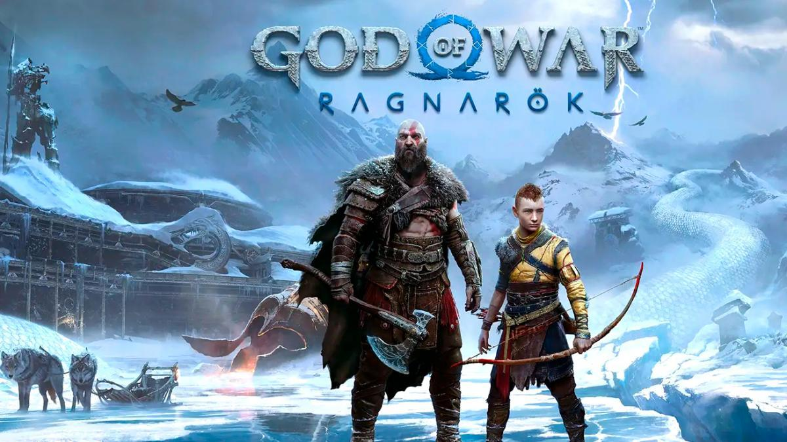

Estos son unos de los proximos Lanzamientos del 2022 Para PlayStation 5 Tenemos  Dying Light 2 (4 de Febrero) God Of war Ragnarok Horizon Forbiden West (18 de febrero) Edge of eternity (10 de febrero) Gran turismo 7 (4 de marzo)